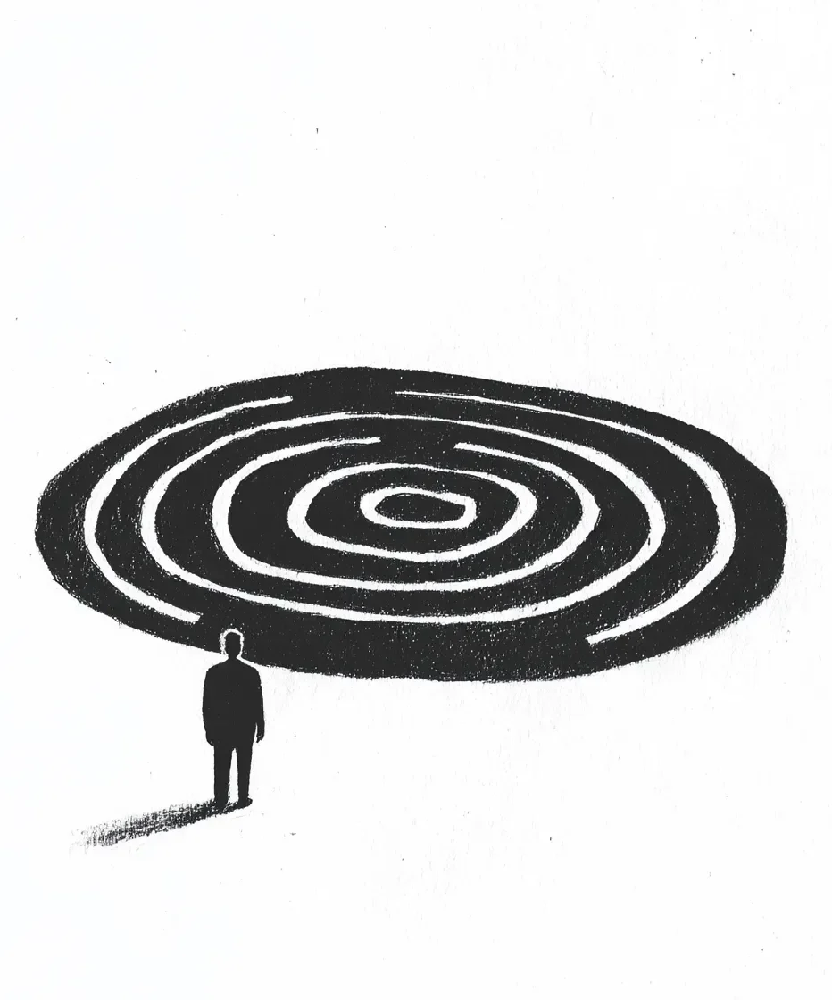

내 치료사는 예술이 내면의 공허함을 치유하는 데 도움이 될 거라고 했다. 하지만 다른 모든 것도 공허하게 만들어버릴 거라는 건 말해주지 않았다.
[My therapist said art would help with the emptiness inside. She didn’t specify it would help by making everything else empty too.]
세 번째 상담에서 그녀는 내게 스케치북을 건넸다. “간단하게 시작해보세요,” 그녀가 말했다. “원을 그리는 것부터요.” 마음 챙김과 반복적인 동작에 대해 설명하는 동안 그녀의 펜은 메모장에 끝없는 원을 그려댔다. 난 그녀의 말을 듣지 않고 있었다, 그저 자라나는 원들을 바라보고 있었다.
[Three sessions in, she handed me a sketchbook. “Start simple,” she said. “Circles, maybe.” Her pen made endless loops on her notepad while she talked about mindfulness and repetitive motions. I wasn’t listening, I was watching those circles grow.]
첫 나선은 마치 살아있는 생명체처럼 내 손가락 아래서 형태를 갖추어갔고, 검은 잉크가 깨끗한 종이를 물들였다. 처음엔 미술 수업에서 아이들에게 가르치는 것 같은 단순한 원이었다. 하지만 중심점에 도달했을 때 뭔가가 변했다. 평면이어야 할 자리에 깊이가 생겼다. 마치 나를 응시하는 우물을 들여다보는 것 같았다.
[The first spiral took shape under my fingers like a living thing, black ink bleeding across pristine paper. Simple circles at first, the kind they teach kids in art class. But something changed when I reached the center point. A depth appeared where flatness should be, like staring into a well that stared back.]
그날 밤 스케치북을 태워버리려 했다. 성냥은 꺼져버렸다. 가위는 종이에 닿자 무뎌졌다. 스케치북은 포식자처럼 인내심을 가지고 내 책상 위에 놓여있었다.
[I tried burning the sketchbook that night. The matches went out. The scissors dulled against the pages. It sat on my desk, patient as a predator.]
각각의 나선은 이전보다 더 많은 것을 앗아갔다. 책상 위의 다육식물은 죽은 게 아니라, 존재하지 않게 되었다. 거미줄은 실 하나하나가 녹아내리듯 사라졌고, 그것을 만든 거미도 함께 사라졌다. 두려워했어야 했다. 하지만 대신 내 손가락은 기대감으로 저릿거렸다.
[Each spiral took more than the last. The potted succulent on my desk didn’t die, it unexisted. A spider’s web dissolved thread by thread, taking its architect with it. I should have been terrified. Instead, my fingers tingled with anticipation.]
스케치북은 내 팔의 연장이 되었다. 점심시간, 회의, 저녁 식사, 내 펜은 멈추지 않았다. 나선은 점점 더 정교해지고, 더 효율적이게 되어갔다. 여기서는 클립이, 저기서는 커피 얼룩이, 화요일의 기억들이 오래된 사진처럼 희미해져갔다. 한번은 직선을 그려보려 했다. 하지만 곡선을 그리도록 내버려둘 때까지 내 손이 떨렸다.
[The sketchbook became an extension of my arm. Lunch breaks, meetings, dinner, my pen never stopped. The spirals grew more precise, more efficient. A paperclip here, a coffee stain there, Tuesday’s memories fading like old photographs. I tried drawing a straight line once. My hand shook until I let it curve.]
“많이 좋아지신 것 같네요,” 다음 상담 시간에 첸 박사가 메모장 위에 펜을 멈춘 채 말했다. “더 집중력이 생기신 것 같아요.”
[“You seem better,” Dr. Chen said during our next session, her pen hovering over her notepad. “More focused.”]
나는 고개를 끄덕였고, 손가락은 이미 허벅지 위에서 원을 그리고 있었다. 내면의 공허함이 세상에서 자신의 메아리를 찾은 것이다.
[I nodded, fingers already tracing circles on my thigh. The emptiness inside had found its echo in the world.]
지난주에는 이웃집 고양이가 내 그림 속으로 사라졌다. 나는 그것을 지켜보았다, 꼬리가 내 나선의 궤적을 따라 휘어지고, 놀이공원 거울에 비친 모습처럼 늘어났다가 압축되더니 존재가 사라지는 것을. 아무도 실종 포스터를 붙이지 않았다. 아무도 고양이가 있었다는 걸 기억하지 못했다.
[The neighbor’s cat disappeared into one of my drawings last week. I watched it happen, the way its tail curved to match my spiral’s path, how it compressed and stretched like a reflection in a carnival mirror before winking out of existence. No one put up missing posters. No one remembered there had been a cat.]
그 힘은 도취적이었다. 각각의 나선은 더 많은 것을 삼켜갔다: 학자금 대출, 오래된 주차 딱지들, 3학년 때 학예회에서 바지에 오줌을 쌌던 그 부끄러운 순간까지. 현실은 가장자리가 부드러워지고 구부러질 수 있게 되었다.
[The power was intoxicating. Each spiral devoured more: my student loans, old parking tickets, that embarrassing moment in third grade when I pissed myself during a school play. Reality became soft at the edges, malleable.]
하지만 예술은 굶주려 있다. 그것은 더 많은 것을 요구한다.
[But art is hungry. It demands more.]
이제는 눈을 깜빡일 때마다 세상이 변한다. 건물들은 그대로지만 간판들이 바뀐다. 사람들은 지나가지만 그들의 얼굴은 불확실해 보인다. 마치 비에 젖은 그림처럼. 내가 만지는 모든 것에는 나선형 흔적이 남는다. 내가 지나간 자리의 공기는 더욱 희박해진다.
[The world shifts between blinks now. Buildings remain but signs change. People walk past but their faces seem uncertain, like paintings left out in rain. My fingers leave spiral traces in everything I touch. The air feels thinner where I’ve been.]
어제는 그림을 그리는 동안 왼손이 투명해지는 것을 발견했다. 내 손가락들은 유리에 갇힌 연기처럼 보였고, 그 아래의 나선은 잉크보다 더 깊은 어둠으로 맥동했다. 새로운 원을 그릴 때마다 방 안의 온도가 떨어진다. 마치 현실 자체가 에너지를 절약하는 것처럼 가장자리의 불빛이 희미해진다.
[Yesterday, I noticed my left hand growing transparent while I drew. My fingers looked like smoke caught in glass, and the spiral beneath them pulsed with a darkness deeper than ink. The room temperature drops with each new circle. Lights dim at the edges, as if reality itself is conserving energy.]
오늘 아침, 거울 속 내 동공에는 천천히 회전하는 은하수처럼 나선 무늬가 형성되어 있었다. 이제는 펜을 더 세게 누른다, 현실이라는 얇아지는 장막을 뚫기 위해서는 더 많은 압력이 필요하다.
[This morning, my reflection showed spiral patterns forming in my pupils, turning like slow galaxies. I press my pen harder now, it takes more pressure to pierce the thinning veil of what’s real.]
나는 마지막 나선을 그리고 있다. 지금까지 중 가장 큰 것이다. 기하학적 바이러스처럼 거실 벽을 가로질러 퍼져나간다. 선이 교차하는 곳마다 현실의 가장자리가 안쪽으로 말린다. 내면의 공허함이 자신의 친족을 알아본다, 내가 만들어낸 이 거대하고 회전하는 공허를.
[I’m drawing one last spiral. It’s the biggest yet, spreading across my living room wall like a geometric virus. The edges of reality curl inward where the lines intersect. The emptiness inside recognizes its kin, this vast, spinning nothing I’ve created.]
중심이 나를 부른다. 모든 것을 조용하게, 모든 것을 깨끗하게 만들어주겠다고 약속한다. 더 이상의 기억도, 사람들이 있었던 자리의 빈 공간도 없을 것이다. 오직 완벽한, 기하학적 침묵만이 있을 것이다.
[The center is calling. It promises to make everything quiet, everything clean. No more memories, no more gaps where people used to be. Just perfect, geometric silence.]
내 손은 기계처럼 정확하게 움직인다. 벽이 안쪽으로 휘어지고, 나는 그 끌어당김을 느낀다. 나선은 회전하며 자신의 창조자를 갈망한다.
[My hand moves with mechanical precision. The wall bends inward, and I feel the pull. The spiral spins, hungry for its own creator.]
망각에도 중심점이 있을까 궁금하다.
[I wonder if oblivion has a center point.]